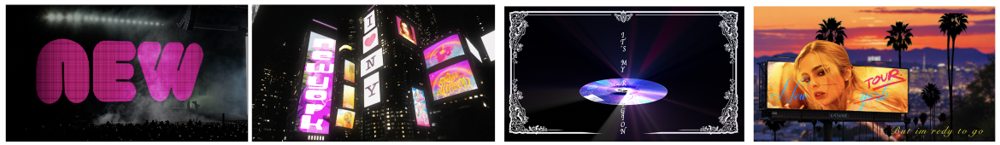
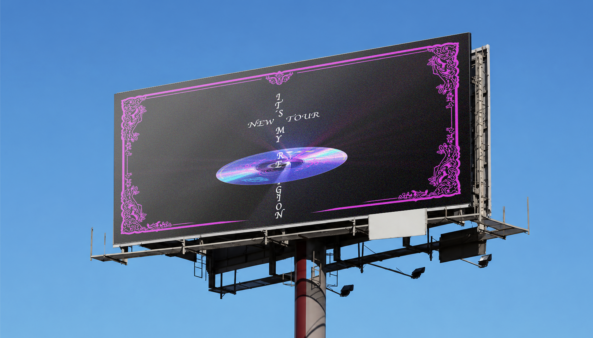
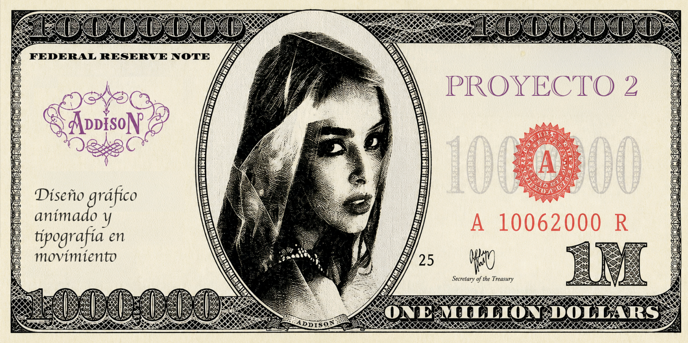
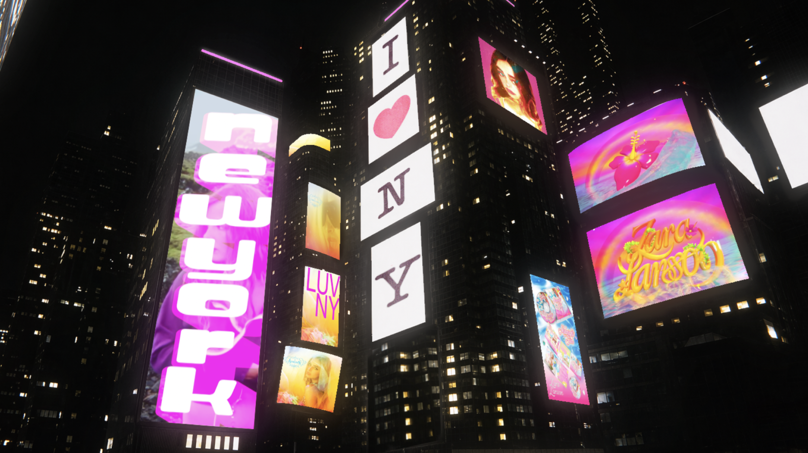

I love NY
2026
Animation Video
Brand Identity / Animation / Art Direction / Client project
An audiovisual piece for the intro to Adisson Rae´s concert
Role: Designer. Identity and launch visuals.
OVERVIEW
A promotional motion graphics video inspired by Addison Rae's playful and unconventional visual identity. The idea was to translate her music into a fast-paced visual experience, combining nostalgic internet aesthetics, bold typography, vibrant colors, and references to pop culture.
THE IDEA
I wanted the video to feel spontaneous, energetic, and slightly chaotic, reflecting the artist's mix of visual influences. Rather than following one consistent graphic style, I experimented with contrasting typography, digital textures, neon colors, and vintage-inspired elements to create a visual world that feels distinctly hers.
BRINGING THE CONCEPT TO LIFE
I explored ways to make typography interact with its surroundings instead of simply appearing on screen. From animated billboards in New York to a dollar bill featuring the artist, each scene transforms familiar objects and environments into part of the visual narrative. The transitions connect these different worlds, following the rhythm of the music and keeping the composition constantly evolving.
FINAL RESULT
The result is an energetic promotional video that brings together motion graphics, visual storytelling, and experimental design to capture the personality of the artist.



